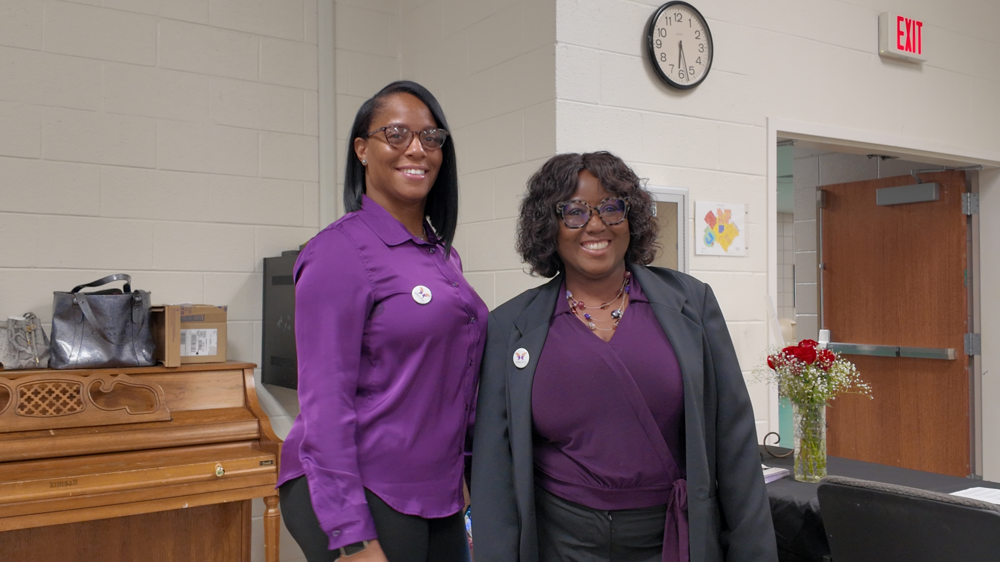
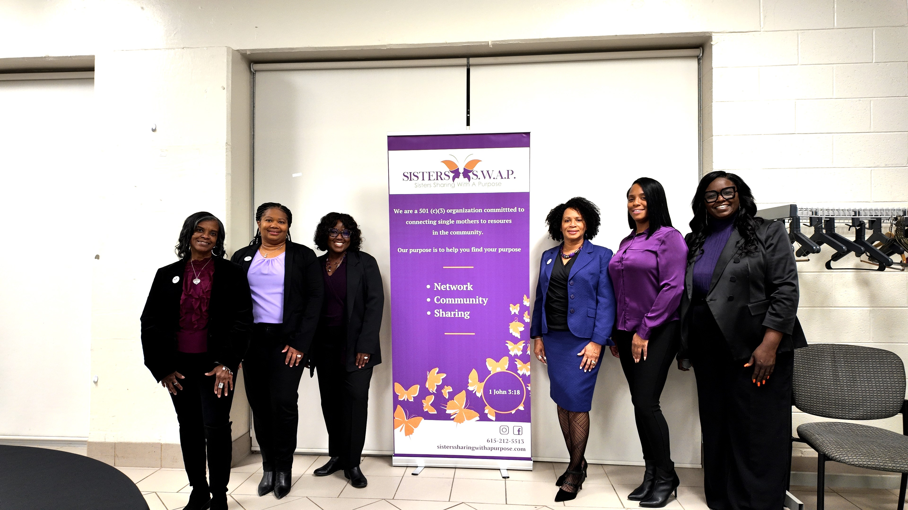

To connect single, low-income mothers with needed resources in their community by developing honest, ongoing relationships and interactions that will effect positive change and encourage them to become women who have defined and achieved their purpose.
Our purpose
Mission, vision & values
Sisters Sharing With A Purpose will connect single, low-income mothers with community resources through mentoring and relationships.
Sisters Sharing With A Purpose is based on 1 John 3:18, which encourages us to love one another as Christ loved us, and to express the true heart of Jesus Christ through words and actions that demonstrate and bring about a fruitful response.
“My little children, let us not love in word, neither in tongue; but in deed and in truth.”
1 John 3:18 (KJV)

Who we are
Sisters supporting sisters
S.W.A.P. is a 501(c)(3) nonprofit based in Murfreesboro, Tennessee. Through monthly gatherings, social engagement, and activities, we help single mothers build community, discover local resources, and expand their support networks.
Every fellowship is a space for caring, trust, confidentiality, empowerment, and love.
- Caring
- Trust
- Confidentiality
- Empowerment
- Love
Community partners
- Murfreesboro City Schools Community Outreach
- Rutherford County Health Department
- Greenhouse Ministries
- Patterson Park Community Center
- First Baptist Church
- Middle Tennessee State University
- Rutherford County Wellness Council
- Tennessee Health Care Campaign
- Vanderbilt Health
- Other like-minded organizations, plus partners outside Tennessee
Our story
Changing one life can change a generation
As a former single mother, Brenda Walton saw that the resources and information moms need often exist in a community but aren’t easy to reach without the right connections. She founded Sisters Sharing With A Purpose in 2016 to change that. In 2019 we registered as a 501(c)(3) organization with the State of Tennessee, and we held our first event as a 501(c)(3) on December 3, 2019.
From the beginning, a dedicated working board has guided our work, from health care executives, budget managers, and social services professionals to a restaurant owner and current and former single moms. Each month, moms come together to share, laugh, cry, play, learn, and grow in their purpose, with food and childcare provided. The kids look forward to our fellowships just as much as their moms do.
In October 2024 we launched our Ambassadors program with five moms who have attended consistently, one of them since our very first event. Ambassadors work alongside the board to reach more single moms in our community.
Our programs
Monthly meetings
Connecting single mothers to resources in the community, with time to build relationships and grow. We meet the fourth Thursday of every month at Patterson Park Community Center.
Ambassadors
Mentoring mothers to become leaders, facilitators, and representatives in the community. Launched in October 2024 with five Ambassadors.
Dream Again Scholarship
Helping fill the gaps in expenses for mothers seeking higher education, with scholarships of up to $500.
Infant mortality report
An opportunity to impact policy and legislation and give mothers a voice, in partnership with the Rutherford County Wellness Council.
Leadership
Our executive team
A working board of professionals and moms with lived experience guides S.W.A.P.
Brenda WaltonFounder & Chair
As a former single mother, Brenda saw that resources and information existed in her community but weren’t easy to reach through her own network. She resolved to create those connections for other moms and founded Sisters Sharing With A Purpose in 2016. Brenda attended Middle Tennessee State University and is a certified ADR mediator and a licensed and ordained minister.
Carleigh FrazierVice Chair
Carleigh serves in the Office of Community Health and Engagement at Vanderbilt University Medical Center, where she leads the Community Health Needs Assessment and manages community partnerships and the community grants program. A Fisk University alumna with a Master of Public Health from Vanderbilt University School of Medicine, she also founded Frazier Montgomery Consulting and serves on the board of Senior Ride Nashville.
Vickie YoungSecretary
A native of Memphis and a graduate of Lincoln University (Missouri), Vickie is a proud member of Alpha Kappa Alpha Sorority, Inc. and a retired auditor for a hotel chain. She brings a full commitment to enhancing the lives of single moms.
Teresa RussellTreasurer
Teresa is an executive and entrepreneur with extensive experience in financial management, strategic planning, real estate operations, and organizational leadership. She and her husband own and operate WTR Capital, LLC, a real estate asset management company.
Get involved
Find your place in the circle
Attend a session
Single moms are always welcome at our monthly sharing sessions.
Volunteer
Share your skills, time, and experience with moms in our community.
Give
Support monthly gatherings with a gift through PayPal, Cash App, or mail.

Make a difference
Donate to the mission
Your gift provides food and materials for our monthly gatherings and helps more single mothers in our community find their sisters.